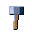
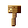

Loot & Rewards
Loot bags are Conduvia’s reward drops — earned from quests, milestones, and world caches. Right-click a bag to open it and it rolls a handful of item stacks from its pool. Everything below is pulled straight from the game’s loot tables, so this is exactly what each bag can contain.
10 bag types · 27 shared resources in the common pool
How a bag rolls
- Each bag yields a fixed number of stacks — its roll count.
- Tiered bags blend a bag-specific pool with the shared Common resource pool (below). The common fraction is the chance each roll comes from that shared pool.
- Curated milestone bags ignore the common pool entirely — they only ever drop their hand-picked contents.
- The Chance column is the relative odds within that pool — a higher number means that item shows up more often.
Tiered bags
Standard reward bags. Higher tiers roll more stacks and lean less on the shared pool.
SSSurvival Satchel · Survival Satchel · Tier I
Drops 3 stacks · 50% of each roll comes from the common pool
PP Pioneer's Pouch · Pioneer's Pouch · Tier II
Pioneer's Pouch · Pioneer's Pouch · Tier II
Drops 3 stacks · 42% of each roll comes from the common pool
EKEngineer's Kit · Engineer's Kit · Tier III
Drops 4 stacks · 35% of each roll comes from the common pool
SC
Steelworker's Crate · Ironmonger's Chest · Tier IV
Drops 4 stacks · 28% of each roll comes from the common pool
ELElectrician's Locker · Electrician's Case · Tier V
Drops 5 stacks · 22% of each roll comes from the common pool
SS
Solid-State Cache · Lab Components Bundle · Tier VI
Drops 5 stacks · 16% of each roll comes from the common pool
OCOrbital Crate · Orbital Cargo Capsule · Tier VII
Drops 6 stacks · 12% of each roll comes from the common pool
Curated milestone bags
One-off gifts handed out at key story beats. Fixed, hand-picked contents — no random common drops.
FC First Camp Gift · First Camp Gift · Tier I
First Camp Gift · First Camp Gift · Tier I
Curated gift · drops 5 stacks · hand-picked contents only
IAIron Age Head Start · Iron Age Head Start · Tier II
Curated gift · drops 5 stacks · hand-picked contents only
LC lootbag curated orbit · Orbital Achievement Pack · Tier VII
lootbag curated orbit · Orbital Achievement Pack · Tier VII
Curated gift · drops 6 stacks · hand-picked contents only
Common resource pool
Shared bulk resources any tiered bag can pull from, once you’ve reached the listed tier. This is the dependable “floor” of every drop.
Common resource pool 27